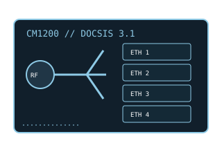

[ MODEL-SPECIFIC NETWORK HARDWARE ]
NETGEAR CM1200 DOCSIS 3.1 Cable Modem
DOCSIS 3.1 cable modem with four Gigabit Ethernet ports and manufacturer-supported multiport link aggregation for compatible provider service.

EXACT MODEL / SKU: NETGEAR CM1200 (North American CM1200-100NAS family). Confirm complete suffix and hardware label before activation.
Exact specifications and compatibility
| Model / SKU | NETGEAR CM1200; retail model CM1200-100NAS. |
|---|---|
| Modem standard | DOCSIS 3.1 with DOCSIS 3.0 backward compatibility; supports OFDM/OFDMA and bonded legacy channels per cable-system provisioning. |
| Interfaces | Coaxial F-connector; 4 × 10/100/1000BASE-T Ethernet ports; link aggregation can combine designated ports with a compatible router/provider service. |
| Downstream / upstream | NETGEAR advertises up to 2Gb/s service capability with supported Ethernet link aggregation. DOCSIS 3.1 supports downstream OFDM and upstream OFDMA; upload rate and channel profile are provider-assigned, not a fixed modem guarantee. |
| Telephone service | No telephone ports and no eMTA voice functionality. A provider's bundled voice service needs a separate compatible voice modem. |
| Provider compatibility | NETGEAR lists major US cable providers (including Xfinity, Spectrum and Cox), but approval, supported tier, aggregation feature and activation depend on provider policy and the exact SKU. |
| Firmware / host compatibility | Cable operator provisions DOCSIS firmware and channel configuration. No PC-specific modem driver; link aggregation requires a compatible router and provider configuration. Check operator firmware support before purchase. |
| Power and safety | 12V DC, 1.5A adapter per NETGEAR specifications. Use the supplied approved adapter, place on a stable ventilated indoor surface, keep dry and do not cover or open the enclosure. |
Model-specific notes
The aggregate Ethernet feature does not create a faster single-client interface by itself; provider provisioning and compatible aggregation at the router end are required. Nominal link and plan rates are not measured throughput.
Manufacturer specifications and manual
- NETGEAR CM1200 official data sheetManufacturer specification for port count, DOCSIS standard and supported service configuration.
- NETGEAR CM1200 User ManualManufacturer-hosted setup, Ethernet aggregation, safety and troubleshooting instructions.
- NETGEAR CM1200 support and downloadsOfficial support and provider-compatibility route for the model.